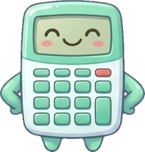

세무의 길 · 맛보기
본사 회계팀
🎵
증빙
0/5
나가기
🎉 본선 완주!
원재료 T
▶
재공품 T
▶
제품 T
원재료가 라인을 거쳐 완제품이 되는 흐름을 두 발로 다 걸었습니다.
이제 되돌아가서 보조부문·공장사무실의 배분까지 마저 봐야 합니다.
계속하기

맛보기 끝!
밀밭 → 방앗간 → 빵공장까지 걸었어요.
다음 길(시장 골목 · 빵집 · 항구와 연회장 · 세무서 · 조세박물관)은 준비 중이에요.
계속 둘러보기
처음부터 다시
나가기
🎉 게임 클리어!
0
서류
0/14
·
퀴즈 오답
0
회
·
명세서 오배치
0
회
🏆 TOP 랭킹
불러오는 중...
↺ 처음부터 하기
🏠 허브로
대화
왼쪽 스틱(PC는 방향키)으로 이동 · 먼저 한서준 대리에게 말을 거세요
📄
세무의 길
✕
◀
이전
계속
▶
확인 퀴즈
다음
▶
잘 배웠나 볼까요?
와(과) 나눈 이야기, 관련 문제로 몇 번이고 연습할 수 있어요.
✏️ 연습문제 풀기
다음에 할게요
연습문제
다음
▶
🔁 다시 풀기
닫기
📁 부가세 증빙 바인더
0/5
닫기
제조원가명세서
자료 카드를 고른 뒤, 들어갈 칸을 누르세요
명세서 제출하기